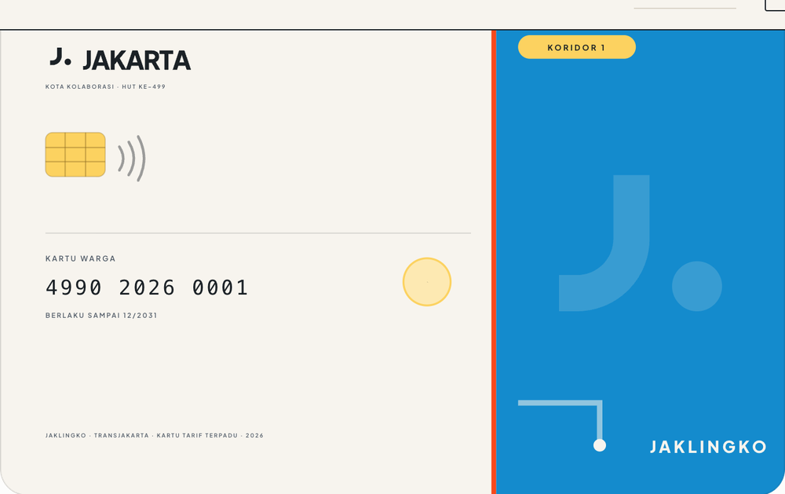

Ten districts · 112° · torn at the floorField, not background
HUT ke–499 Kota Jakarta
Bergerak Menuju Era Baru Jakarta
Nine ramps, no gradient
4 steps each · ratio on paper
Langit SenayanSenayan sky
Night, links, focus
7,89body
Laut SundaSunda sea
Transit, information
3,41large
Merah MentengMenteng red
Alert, closure, emergency
3,40large
Senja PalmerahPalmerah dusk
Primary accent, civic action
3,24large
Aspal SudirmanSudirman asphalt
Ink, secondary text
10,64body
Terang KebayoranKebayoran light
Heritage, festival, highlight
1,32ground
Menteng DaunMenteng leaf
Park, sustainability, open data
3,08large
Sinar AncolAncol light
Leisure, events, digital
3,04large
Doger MayestikMayestik doger
Youth, culture, campaign
1,99ground
JakLingko · ID-1
85,60 × 53,98 mm

Ribbon 14 · lockup 2,9 mm
Chip, contactless, tabular number Cream on Laut 3,41
large text only
Chip, contactless, tabular number Cream on Laut 3,41
large text only
One colour per section
Decoration only
The idea7,89
The mark4,56
Palette5,57
Type4,87
Applications4,80
Tokens10,64
Audit5,68
Plus Jakarta Sans · 200–800
Outlined wordmark
Aa
display-1104 / 0,90 / −0,045em
h148 / 1,02 / −0,032em
body16,5 / 1,62
caption11,5 / 0,16em
24
48
112
compact